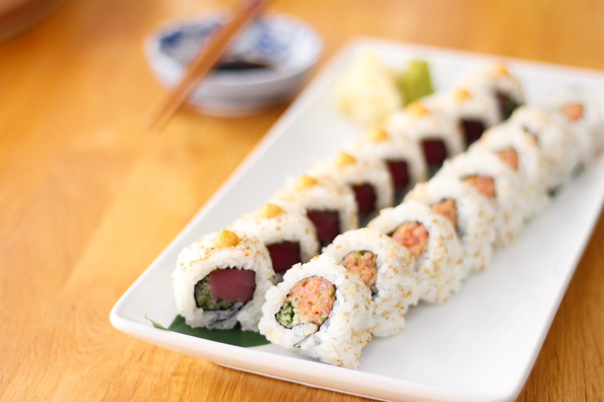

Back
Spicy Tuna Sushi Roll

Description
A great tasting spicy sushi roll, for those who like extra pizzazz. You can use cooked or raw tuna to your preference to achieve great flavors. Great for a filling Japanese meal. Tastes great with a wasabi soy dip.
Ingredients
- 2 cups uncooked glutinous white rice
- 2 ½ cups water
- 1 tablespoon rice vinegar
- 1 (5 ounce) can solid white tuna in water, drained
- 1 tablespoon mayonnaise
- 1 teaspoon chili powder
- 1 teaspoon wasabi paste
- 4 sheets nori (dry seaweed)
- ½ cucumber, finely diced
- 1 carrot, finely diced
- 1 avocado - peeled, pitted and diced
Directions
- Bring the rice, water, and vinegar to a boil in a saucepan over high heat. Reduce heat to medium-low, cover, and simmer until the rice is tender, and the liquid has been absorbed, 20 to 25 minutes. Let stand, covered, for about 10 minutes to absorb any excess water. Set rice aside to cool.
- Lightly mix together the tuna, mayonnaise, chili powder, and wasabi paste in a bowl, breaking the tuna apart but not mashing it into a paste.
- To roll the sushi, cover a bamboo sushi rolling mat with plastic wrap. Lay a sheet of nori, rough side up, on the plastic wrap. With wet fingers, firmly pat a thick, even layer of prepared rice over the nori, covering it completely. Place about 1 tablespoon each of diced cucumber, carrot, and avocado in a line along the bottom edge of the sheet, and spread a line of tuna mixture alongside the vegetables.
- Pick up the edge of the bamboo rolling sheet, fold the bottom edge of the sheet up, enclosing the filling, and tightly roll the sushi into a thick cylinder. Once the sushi is rolled, wrap it in the mat and gently squeeze to compact it tightly. Cut each roll into 6 pieces, and refrigerate until served.
Nutrition Facts (per serving)
- Calories 346
- Fat 12g
- Carbs 47g
- Protein 14g